新宿駅から徒歩6分、エイチクリニック新宿では、国内で最も感染報告の多い性感染症であるクラミジアの検査・治療を行っています。クラミジアは無症状で経過することが多く、気づかないうちにパートナーへ感染を広げたり、放置によって不妊などのリスクにつながったりすることがあります。当院は本名不要の匿名検査・即日結果が可能な検査に対応し、深夜23時30分まで（最終受付22:30）・土日祝も診療。完全個室・呼び出し番号制で、人目を気にせず受診いただけます。「症状はないが心配」「排尿時に違和感がある」という方は、新宿で深夜まで対応する当院にご相談ください。
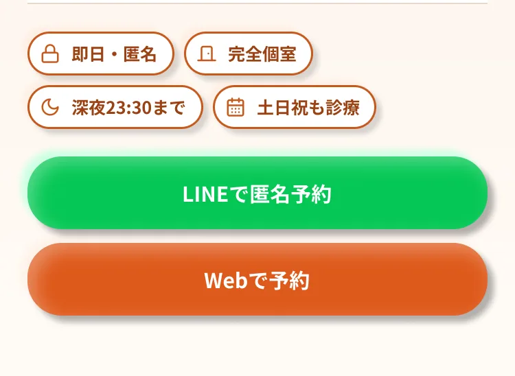
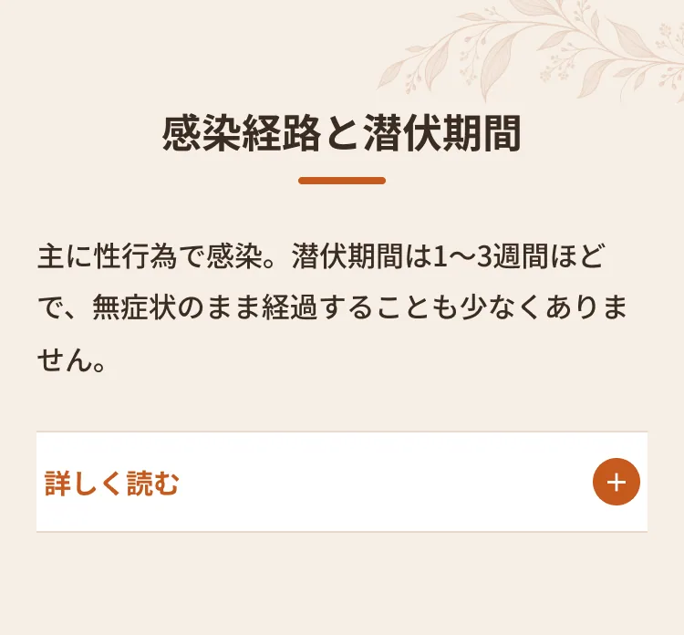
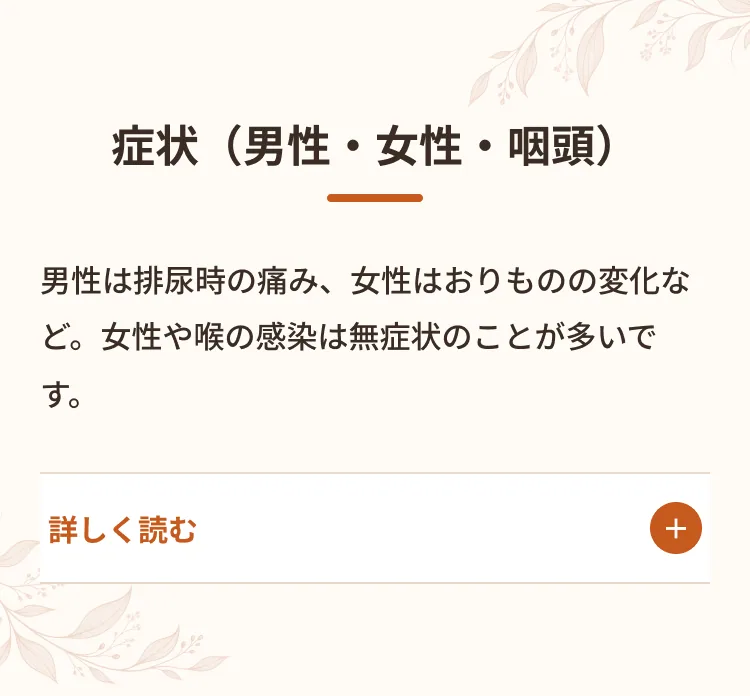
主な感染経路は性行為（膣性交・オーラルセックス・アナルセックス）で、1回の性的接触での感染率は30〜50%程度とされます。ディープキスでも喉から喉へ感染が広がる可能性があります。潜伏期間は感染からおおむね1〜3週間ですが、個人差が大きく、数週間〜数か月後に症状が出ることや、無症状のまま経過することも少なくありません。潜伏期間中でも体内に菌は存在し、人にうつす可能性があります。
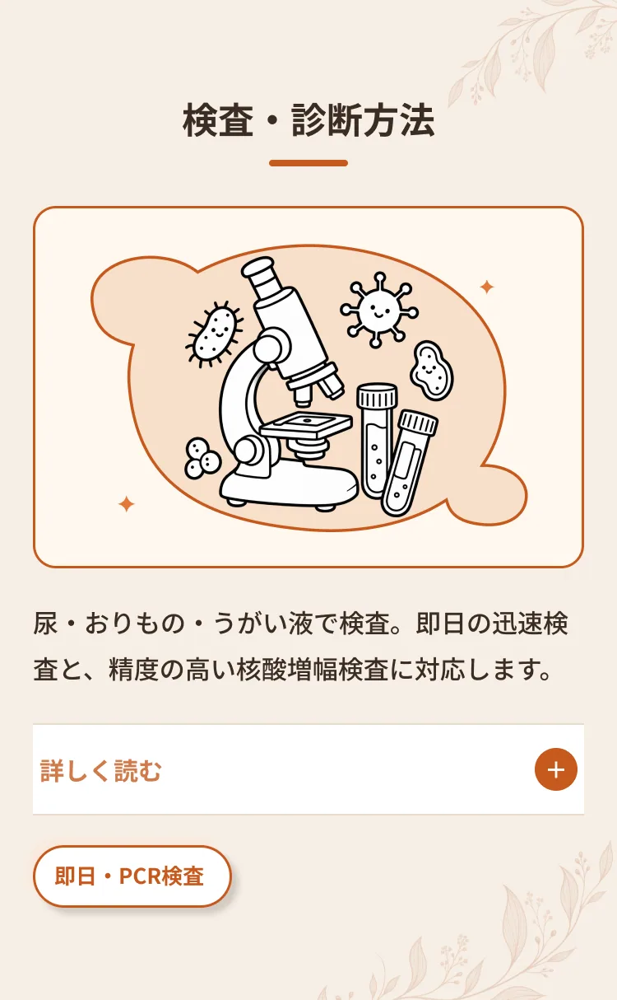
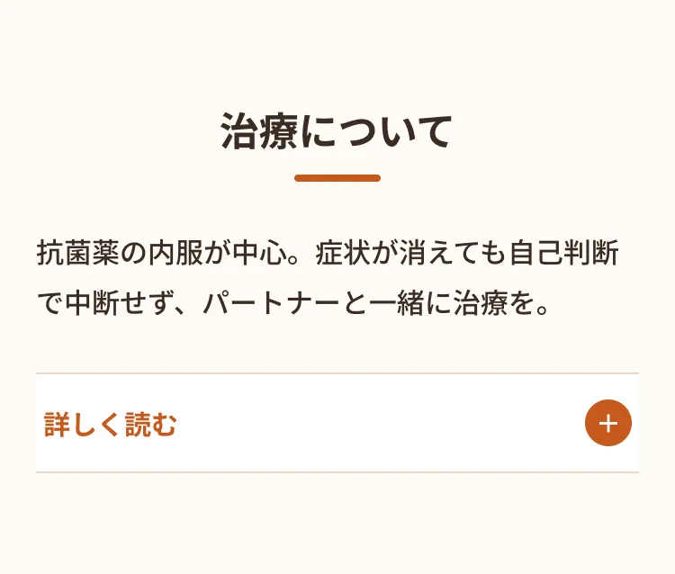
クラミジアは感染部位によって症状が異なります。男性は尿道に感染しやすく、排尿時の痛みや違和感、尿道からの少量の分泌物などがみられます（クラミジア性尿道炎）。女性は子宮頸管に感染しやすく、おりものの増加や色・においの変化、下腹部痛、性交時痛、不正出血などが現れることがありますが、半数以上は無症状ともいわれます。咽頭（喉）に感染した場合は、男女とも症状がほとんど出ないことが多いのが特徴です。女性では放置により骨盤内炎症や不妊につながるおそれがあるため注意が必要です。
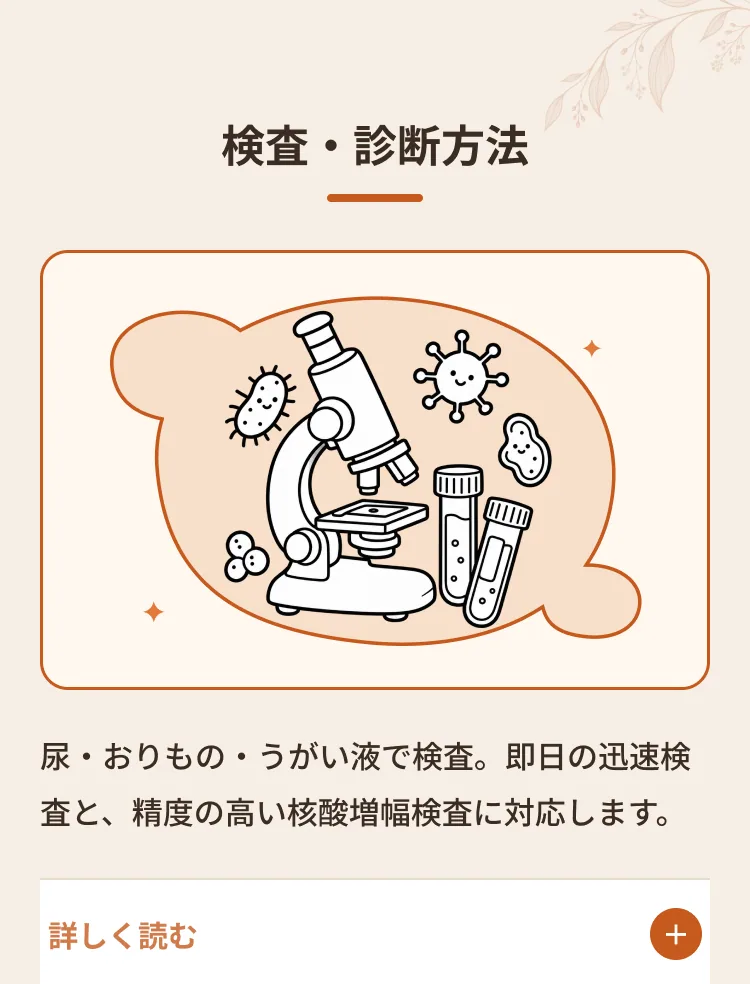
クラミジアの検査は、感染が心配な部位に応じて行います。男性は尿、女性は膣分泌物または尿、咽頭はうがい液などを採取します。当院では、即日結果が出る迅速検査（抗原検査）と、より精度の高い核酸増幅検査（PCRなど／結果は数日）に対応します。即日の抗体検査は過去の感染も反映するため、現行感染の診断には核酸増幅検査が適しています。症状がない場合でも感染機会から24時間以上経過すれば検査が可能で、早期の陰性結果でも1か月後の再検査をおすすめする場合があります。クラミジアと淋菌は症状が似ており複合感染することもあるため、同時に検査を行うことがあります。
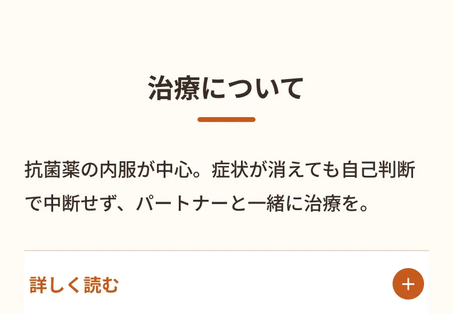
クラミジアの治療は抗菌薬の内服が中心です。アジスロマイシン（ジスロマック）の単回投与、またはレボフロキサシンの一定期間の内服などを、症状や状況に応じて選びます。咽頭クラミジアも基本的に同じ薬で治療します。症状が消えても自己判断で中断せず、処方された分を最後まで服用することが大切です。治療中および治療後一定期間は性行為を控え、パートナーも一緒に検査・治療を受けることで再感染を防げます。治療後は、医師の指示に従って再検査で治癒を確認します。

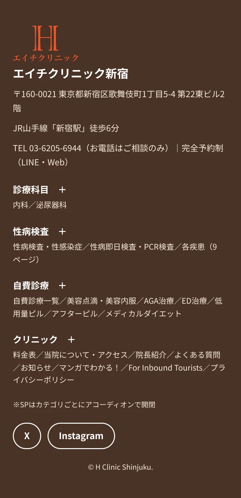
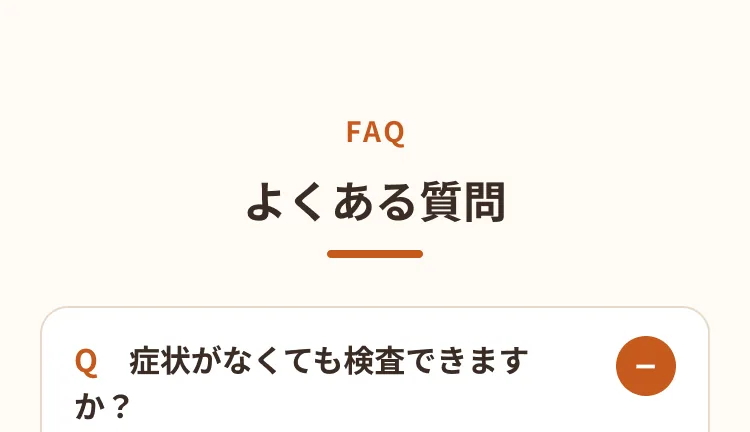
A.感染機会から24時間以上経過していれば検査可能です。無症状でも心配な機会があれば検査をおすすめします。
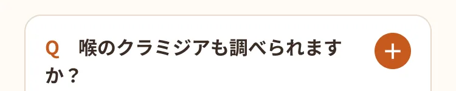
A.うがい液で咽頭クラミジアの検査ができます。
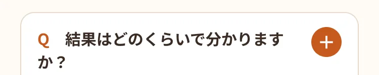
A.即日結果が出る検査と、精度の高い数日かかる検査があります。
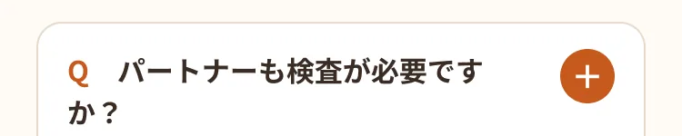
A.再感染を防ぐため同時の検査・治療を推奨します。
A.深夜23:30まで（最終受付22:30）対応しています。